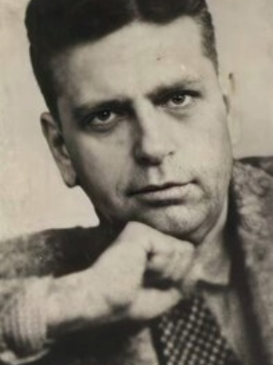
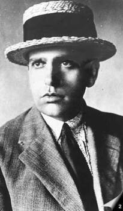
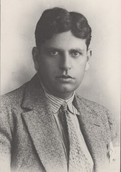

Modernismo e Manifesto Antropofágico
Oswald de Andrade foi um dos principais nomes do Modernismo brasileiro. Em 1928, lançou o Manifesto Antropofágico, que defendia a ideia de "devorar" influências estrangeiras e transformá-las em algo genuinamente brasileiro.

Semana de Arte Moderna
Semana de Arte Moderna
de 1922
Ele participou ativamente da Semana de Arte Moderna de 1922, evento que revolucionou a cultura brasileira, rompendo com as tradições e trazendo inovações para a literatura, a arte e a música.

Vida Pessoal e
Vida Pessoal e
Relacionamentos
Teve um relacionamento marcante com a pintora Tarsila do Amaral, formando o famoso casal "Tarsiwald". Também foi casado com Pagu (Patrícia Galvão), importante escritora e ativista política.